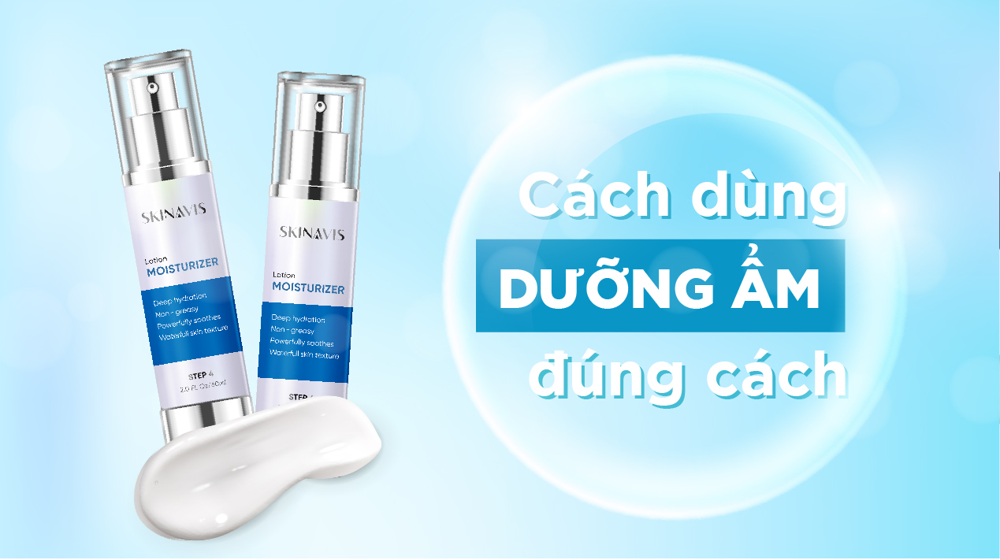

Cách dùng kem dưỡng ẩm đúng chuẩn

Trong quy trình chăm sóc da của bạn có bước dưỡng ẩm không? Và bạn có chắc rằng mình đang sử dụng kem dưỡng ẩm đúng cách? Nếu chưa chắc chắn, hãy tham khảo cách dùng kem dưỡng ẩm đúng chuẩn dưới đây. Skinavis Việt Nam muốn chia sẻ với mọi người để tất cả chúng ta đều có một làn da khỏe đẹp, rạng rỡ.
Thao tác thoa kem không đúng cách cũng chính là một trong những nguyên nhân khiến da lão hóa và chảy xệ. Dưới đây Skinavis sẽ mách bạn cách thoa kem dưỡng cho da tốt nhất.
Các bước thoa kem dưỡng ẩm
Bước 1: Vệ sinh da mặt và tay sạch sẽ
Bước 2: Lấy một lượng kem dưỡng bằng hạt đậu ra đầu ngón tay, xoa đều lượng kem vừa lấy trên các đầu ngón tay trước khi thoa lên da (hoặc chấm đủ trên 5 vị trí bao gồm trán, mũi, cằm và 2 bên má).
Bước 3: Bắt đầu vỗ nhẹ và tán đều kem trên bề mặt da. Thực hiện động tác massage vuốt từ hai bên sống mũi lên đuôi mắt.
Bước 4: Đừng quên thoa kem vào vùng da cổ của mình và vuốt theo hướng từ dưới lên để hạn chế tình trạng da bị chảy xệ.
Và ngay dưới đây, Skinavis Việt Nam muốn gợi ý cho bạn quy trình chăm sóc da hàng ngày, cùng tham khảo để cải thiện làn da ngày càng khỏe đẹp hơn nhé!
Nên bôi kem dưỡng ẩm mấy lần 1 ngày?
Đừng bao giờ nghĩ rằng cứ thoa nhiều kem dưỡng là tốt bởi da chỉ hấp thụ đủ lượng dưỡng chất mà da cần. Việc thoa quá nhiều dẫn đến tình trạng da bị thừa dưỡng chất, gây bít tắc lỗ chân lông, tạo điều kiện cho vi khuẩn làm hại da đồng thời gây lãng phí. Bạn nên thoa 2 lần/ngày, một lần trước khi đi ngủ và một lần sáng sớm sau khi ngủ dậy (thoa sau khi làm sạch và trước khi thoa kem chống nắng).
Nên thoa kem dưỡng ẩm khi nào?
Để da hấp thụ một cách tốt nhất bạn nên thoa khi da mặt còn ẩm, lúc này kem dưỡng giúp da khóa ẩm, ngăn chặn sự mất nước. Đừng để làn da khô cong rồi mới thoa kem dưỡng ẩm bạn nhé!
Trên đây là những chia sẻ mà Skinavis Việt Nam muốn gửi tới các bạn. Mong rằng qua bài viết vừa rồi bạn đã hiểu hơn về cách dùng kem dưỡng ẩm hiệu quả. Nếu còn những thắc mắc về cách sử dụng kem dưỡng ẩm, bạn có thể comment bên dưới bài viết để cùng Skinavis Việt Nam tìm ra cách xử lý giúp làn da trở nên khỏe đẹp hơn nhé!